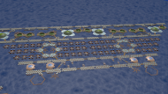

Creating a Floating Island with Plastic Foam
This is an outline design for a floating island. While the design is speculative, suitable materials and components are available or feasible to build now, though not using waste materials or to the specification described here. Get an overview by following the images, or a fuller view from the associated text and links, especially Rationale, Ideas and Design. For videos see Video of Harbour Approach, Video of Inner Four Rings and Village Video. Enjoy!
Foam Technology on the Sea

Buoys & Things
Foam artifacts include buoys, pontoons, marinas, lifeboats, floating docks and platforms and even remedial bio-islands for improving water quality!
FAR: Floating Artificial Reef

Artificial Reef
Sunken artificial reefs are used to improve marine habitats with shelter and nutrient traps; a floating version would also provide a breakwater similar to salt marshes and mangroves
From FARs to Artificial Islands
Artificial Island
FARs could be extended to provide platforms for power generation, aquaculture, marine sports, desalination plants and even, as described here, floating islands to counter land loss from erosion and rising sea levels